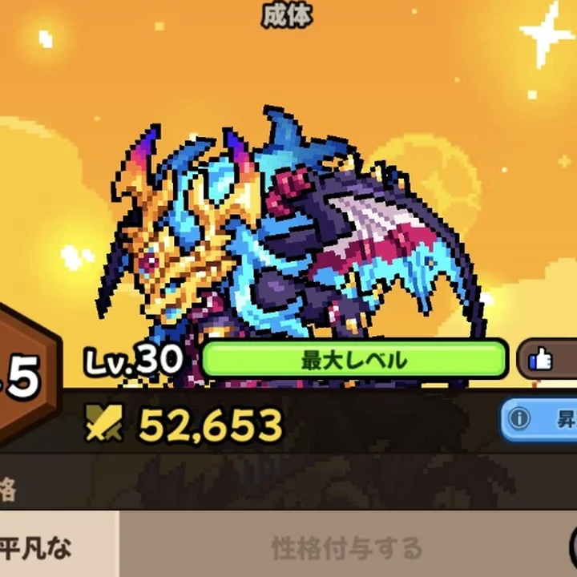

BASIC DATA
基本情報
- レア度
- Legendary（伝説）
- 属性
- 闇・夢・月
- 固有
- 不眠症
- 効果
- 睡眠状態にならない。
- 主な獲得先
- ガチャ
- 所有個体
- 等級3.5／性格「平凡な」

所有個体｜成体 Lv.30LEGENDARY DRAGON
闇・夢・月属性のレジェンドドラゴン。等級3.5の所有個体をLv.1から育成し、成長値と進化補正を記録しています。
BASIC DATA
UNLOCKS
交配機能が解放される。
必殺技「黄昏の亀裂」が使用可能になる。
SKILLS
ゲーム内の基本情報画面で確認した内容です。
NORMAL ATTACK
最も基本的な物理攻撃。黄昏属性で攻撃し、エネルギーを1回復する。
SPECIAL MOVE
虚空のエネルギーを凝縮した黄昏属性攻撃で敵に大ダメージを与え、敵より先に攻撃できる。戦闘ごとに1回のみ使用可能。
GROWTH FORMS
同一個体の育成記録です。
GRADE
PROJECT D RECORD
| 段階 | Lv | 戦闘力 | 体力 | 攻撃 | 防御 | 魔力 | 抵抗 | 速度 |
|---|---|---|---|---|---|---|---|---|
| ハッチ | 1 | 14,777 | 358 | 552 | 664 | 426 | 677 | 358 |
| ハッチ | 5 | 15,752 | 382 | 591 | 713 | 455 | 726 | 382 |
| ハッチリング | 5 | 22,938 | 424 | 659 | 796 | 506 | 810 | 424 |
| ハッチリング | 15 | 26,609 | 492 | 770 | 931 | 589 | 949 | 492 |
| 成体 | 15 | 43,445 | 542 | 851 | 1,029 | 649 | 1,049 | 542 |
| 成体 | 20 | 46,508 | 580 | 912 | 1,105 | 695 | 1,126 | 580 |
| 成体 | 30 | 52,653 | 656 | 1,036 | 1,256 | 788 | 1,280 | 656 |
EVOLUTION BONUS
| 進化 | 戦闘力 | 体力 | 攻撃 | 防御 | 魔力 | 抵抗 | 速度 |
|---|---|---|---|---|---|---|---|
| ハッチ → ハッチリング | +7,186 | +42 | +68 | +83 | +51 | +84 | +42 |
| ハッチリング → 成体 | +16,836 | +50 | +81 | +98 | +60 | +100 | +50 |
CORE STATS
| 条件 | 体力 | 攻撃 | 防御 | 魔力 | 抵抗 | 速度 |
|---|---|---|---|---|---|---|
| Lv.1 | 330 | 518 | 636 | 397 | 636 | 330 |
| ★5 Lv.50 | 840 | 1,369 | 1,702 | 1,702 | 1,029 | 840 |
図鑑コア能力値と、等級補正を含む所有個体の実測値は別データとして掲載しています。
PROJECT D REVIEW
{kind=link}
{kind=link}
{kind=link}